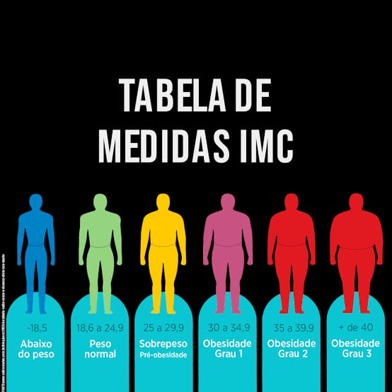

Esta calculadora mede o IMC somente de pessoas acima de 18 anos.
Crianças e adolescentes devem consultar um profissional de saúde especializado.
Em crianças e adolescentes o IMC também é medido, mas as faixas de peso normal, sobrepeso ou obesidade não são as mesmas dos adultos. Em corpos em fase de crescimento, o cálculo leva em conta a idade e varia também para meninos ou meninas.
Os médicos usam gráficos aprovados pela Organização Mundial de Saúde. Neles, o IMC infantil é calculado a partir de linhas que correspondem a índices estatísticos chamados de percentil e escore-Z. Por isso, é fundamental buscar ajuda profissional para o diagnóstico da obesidade infantil.
Procure um médico
Se você tem dúvidas sobre seu peso ou IMC, busque uma orientação médica. Presencialmente ou de forma virtual, uma conversa com um médico pode ser o primeiro passo para começar a buscar mais qualidade de vida.